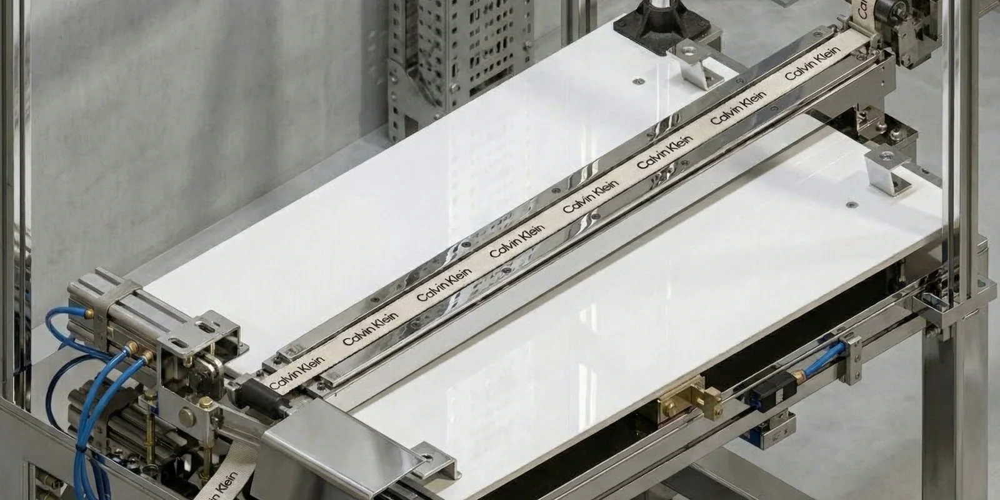
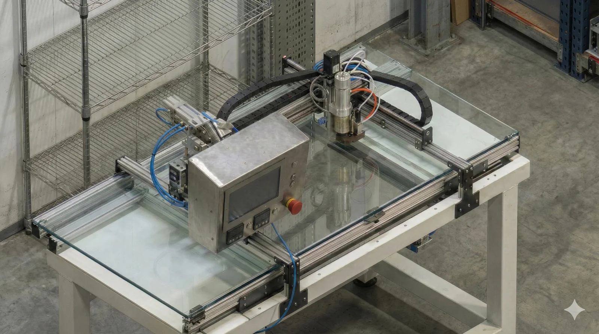
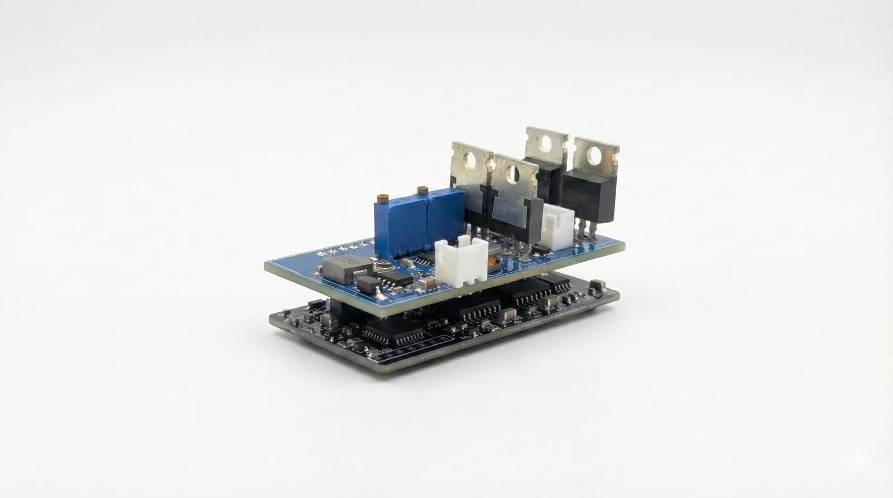
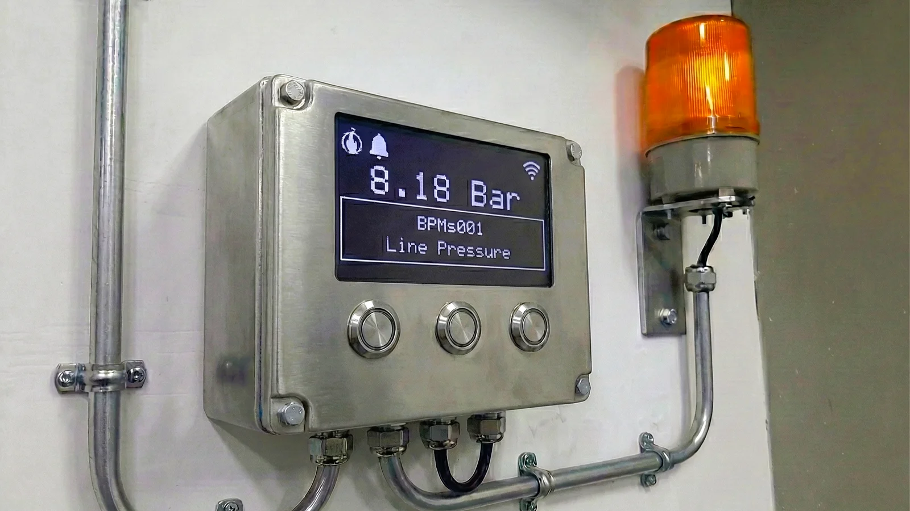

Project Insights
Behind the scenes of our deployed custom engineering solutions.
Vision-Guided Precision Cutter
Industrial AutomationThe Challenge
Cutting elastic waistbands to precise lengths while compensating for complex material stretch.
The Solution
A closed-loop system integrating Machine Vision with PID control. We utilized a Samkoon PLC and Xinjie Servo System to dynamically adjust cutter timing based on real-time visual feedback.
Key Outcome
Increased process speed by 100% and improved accuracy by 86% compared to manual labor.

Adhesive Dispensing Robot Control System
Robotics & CNCThe Challenge
Developing a custom control system for a 3-axis Cartesian robot to dispense adhesive dots following complex DXF patterns.
The Solution
Engineered a cost-effective controller using Raspberry Pi and ESP32 running FluidNC. Wrote custom Python middleware to parse DXF files directly into G-code trajectories.
Key Outcome
Delivered advanced CNC functionality and custom pattern generation at a fraction of the cost of commercial dispensing robots.

Custom Synchronous Motor Driver
Power ElectronicsThe Challenge
Reducing ventilation operational costs in trains by converting stationary fans to oscillating fans running on a specialized 110 VDC supply.
The Solution
Designed a custom Sinusoidal Pulse Wave Modulation (SPWM) inverter driver from scratch. Handled the analog circuit design and PCB layout (KiCad) to handle the specific voltage requirements.
Key Outcome
Successfully enabled the retrofit of efficient oscillating fans, significantly reducing long-term energy consumption.

IoT Pressure Monitoring System
Industrial IoTThe Challenge
Lack of visibility into pneumatic ring pressure levels made maintenance investigative activities difficult and reactive.
The Solution
Developed a wireless monitoring node using ESP32 to log real-time pressure data directly to Google Sheets via HTTP, creating a low-cost, accessible dashboard.
Key Outcome
Provided accurate data for root-cause analysis and sparked a factory-wide initiative for automated data collection.

Pyrolysis Plant Automation
Heavy Industry (INSEE)The Challenge
Commissioning a full-scale automation system for a Pyrolysis Plant, requiring robust industrial reliability and complex system integration.
The Solution
Developed and commissioned a Siemens S7-1500 PLC architecture with a SCADA system on a Rack PC. Handled full-stack PLC programming, field instrument integration, and rigorous acceptance testing.
Key Outcome
Successful plant commissioning, ensuring high-availability operation and seamless data visualization.